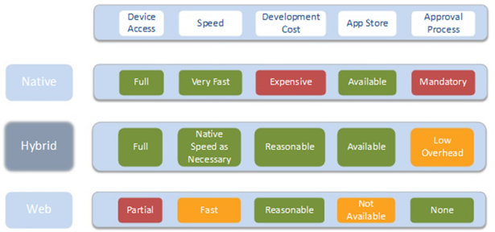

Frameworks, Hybrid Apps and Mobile
F28WP Web Programming
2020-2021
## Overview * Web application frameworks * What do we mean by **Hybrid Apps** and Mobile web applications? * **Examples** (Framework7, Bootstrap, React, Angular) * Questions and Discussion
## What is the difference between a **Library**, **Tookit** and a **Framework**? Can you give an example of each?
## How do libraries, toolkits and frameworks fit together?
## Server-side web frameworks * Make it easier to write, maintain and scale web applications * Provide tools and libraries that simplify common web development tasks: - Routing URLs, interacting with databases, user authorization, formatting output, security * Examples: Laravel (PHP), Django (Python), ASP.Net (C#, VB), Express (Node.js/JavaScript), Ruby on Rails (Ruby), J2EE-JSF & Spring Boot (Java), ...
## Server-side Frameworks Facilities * **mapping URL** patterns to handler functions and Routing * Database layer **ORM** (Object Relational Mapper) * Rendering the output - **Templating** system - helps to generate output by using placeholders for data, supporting expressions and simple operations like iterating - Might provide a set of **reusable UI components** & widgets - Generating HTML & other formats like JSON and XML * **Security** Support - e.g. sanitising all user input
## Client-Side Frameworks * Facilitate development of interactive & responsive web pages * Povide a better developer experience * Allow to write user interfaces more declaratively – dealing with the DOM interactions behind the scenes * Examples: *Angular* - 2016 by Google, *React(DOM/Native)* 2013 by Facebook, *Vue* 2014 (Comment: ReactJS (or React) is not the same as React Native)
## Client-Side Framwworks * Provide abstract **UI components** - maintainable & reusable * Provide **tooling** that improves the development experience - facilitate testing, correctness, and consitency thoughout the appication * Client-side **routing** * Frameworks have to run their own code - Larger application and computationally more expensive
## Client-Side routing * **Single Page Apps**, or SPAs - Load a single HTML shell, and continually update it without navigating to new addresses - New pseudo-webpage is usually called a **view** * Routing functionality is required in a complex SPA with multiple views - When handled by client application is called **client-side routing** * Frameworks have tools to help with client-side routing
## Hybrid Web Applications
## Question * What are hybrid web applications? * Why are hybrid web applications **important**? * What are the benefits of hybrid apps? * What are the **challenges** of hybrid web solutions?
## Hybrid Mobile Apps * Hybrid apps are just like other apps * Developed using **web technologies** (e.g., HTML, CSS, Javascript) * **Webpage** rendered in the apps view component not a browser * **Cross platform** (distributed across multiple devices)
## Hybrid App **Framework** * Hybrid apps use an object to display web content (iOS **WKWebView** or Android **WebView**) * This code is embedded into a **native container** using a solution like Apache Cordova * Gives access to **device components** (e.g., GPS, Camera, Contacts) using plugins * Pre-made components (buttons, scroll-lists, ...)
## Examples of Hybrid App Frameworks
## Progressive Web Apps * Web apps built using common web technologies (HTML, CSS, JS, ...) * Standalone (no browser), work on **multiple platforms** * Do not require a container * Close the gap to native applications and create **similar user experiences** * No requirement to install via digital distribution systems (e.g. AppStore, Google Play)
## Framework7 https://framework7.io * Framework to develop mobile Web, **PWA**, or **Hybrid** apps * Focused on iOS & Android * Free and open source * In addition it provides: <br/>- Comrehensive **UI components** <br/>- **Routing**/Navigation <br/>- Device **resource access** utilities <br/>- ...
### Examples Mobile Web & Hybrid App Frameworks * https://web.dev/progressive-web-apps/ * https://capacitorjs.com/ * http://www.sencha.com/ * http://jquerymobile.com/ * http://www.appcelerator.com/ * http://mulberry.toura.com/ * http://www.kendoui.com/ * http://www.winktoolkit.org/ Many many others are available
## How easy is it to make a hybrid app?
## How to make a hybrid app with Framework7? Getting started (framework7.io) * 1. Goto https://framework7.io/templates/ * 2. *npm install* a template (e.g. framework7-cli) * 3. creat an app ``` framework7 create [--ui] ``` * 4. Edit your new app using Framework7 documentation * 5. Build you app for the desired platform
## Model View Controller (MVC) * How to manage a web-application?
## Are Hybrid Apps the **Perfect** Solution? * Cross platform * Easily upgradable * Flexible * Cost effective * ..
## Are Hybrid Apps the Perfect Solution? _No_, why? **Important** Remember * Not all apps are created **equal** * **Type** of appplication and the required **features** * **Pros** and **cons** for each app/approach * Platform capabilities (calendar, camera, geolocation)
## Native vs Hybrid vs Web Apps Tradeoff comparison 
## Summary * Common frameworks, libraries and tools * Understand Basics of Hybrid Apps and Mobile Solutions * Why **web technologies** are important for **cross-platform** apps
## To do this week ... * Read over the lectures * Review the revision questions * Work through tutorial practicals * Experiment (get into good habits) * **Coursework**